梅吉の巣ごもり冬ごもり [梅吉]
今年も白い恋人の季節になりました。
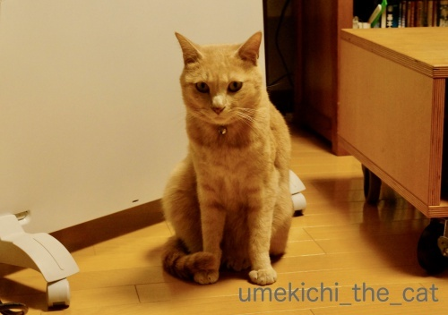
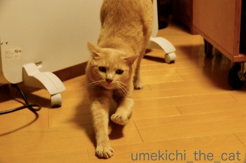
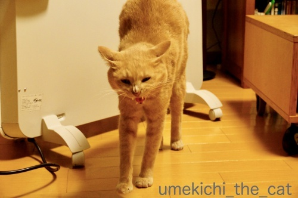
ある程度あったまったら梅吉さんは巣に帰ります。
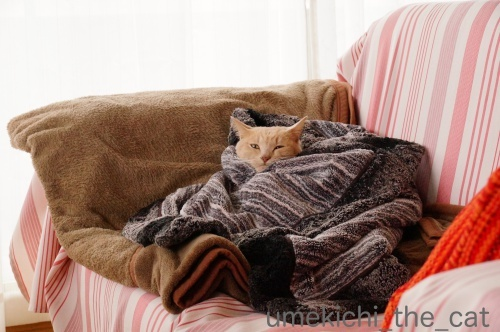
埋まってます( ´艸｀)
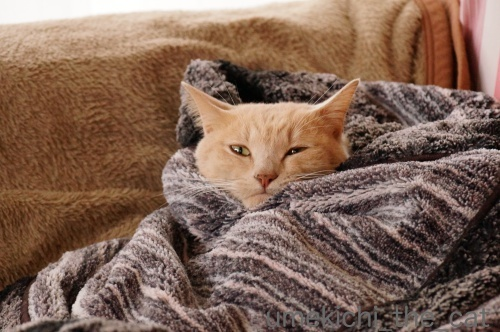
この中に湯たんぽを仕込んであります。
低温やけどしない様にお湯は少し冷ましてブランケットの一番下に。
プラスチックの湯たんぽはお湯の温度がすぐ下がっちゃうので
（しかもダイレクトに熱い）
うちではシリコン製の湯たんぽを愛用しています。
お湯が冷めにくいし体へのあたりも柔らかい。
保温性で見ると陶器の湯たんぽなのでしょうかあれは重くて使いにくいですw
去年の記事を見ていたらパネルヒーターを出したのは11月の初め。
今年はわりと暖かかったので遅めの出番となりました・・・
が、使ったのは2日間ほど。
一気に寒くなってきたので早々にエアコン暖房に切り替えました(⌒_⌒;
こうなるともうエアコンなしではいられない・・・
（道産子は寒さに弱いんですよwww）
梅吉さんの巣はもう一つ。
こちらはかまってちゃんになった時の仮設なんですが・・・

私のPCスペースの目の前に設置＾＾
おててびよ〜んからの
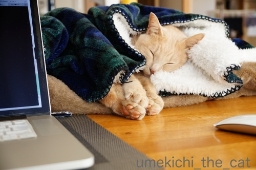
寝返りを打つとこんなことになることも！0(≧▽≦)0
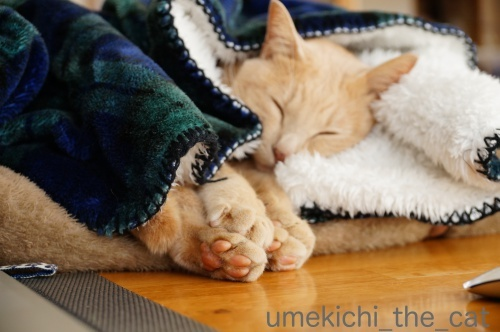
ピントを我が家の四宝（至宝）に合わせてみました！
時々肉球をむにゅむにゅっとお触りしながらのPCタイムになります＾＾
ほかほか梅吉の肉球はあったかいです。
タグ講座
長い、長〜いと修行中 [梅吉]


吸い込まれる猫 [梅吉]
どこのおうちでもにゃんこに大人気のダンボール箱。
梅吉の場合は中に入って寝ることはほとんどなく潜んだりして遊ぶ場所。
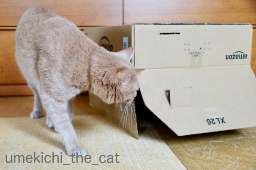
なので置き方はこのようにひっくり返すのか基本です。
と、ひっくり返したとたんやって来ましたよ。
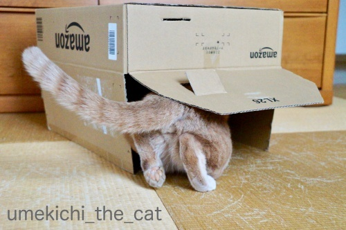
さっそく吸い込まれていきます(*>艸<)
（無修正）
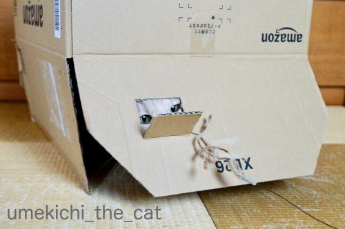
今回は小窓を付けてみました。
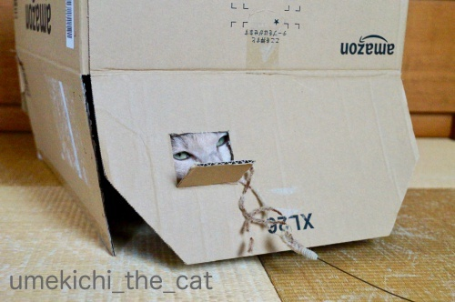
大正解のようでーす！

じゃらしに反応して飛び出してくるのですが

しゅるしゅると吸い込まれていきます。
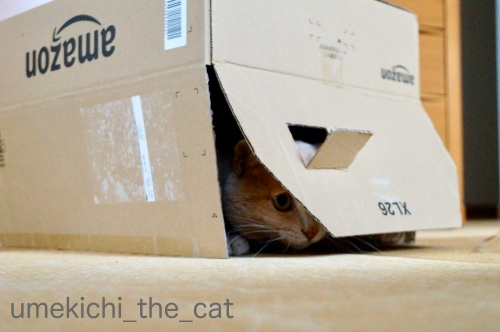
狙って・・・

ズババッ！

そしてまた吸い込まれる。

楽しいですかー0(≧▽≦)0
おかーさんは嬉しいですよ＾＾
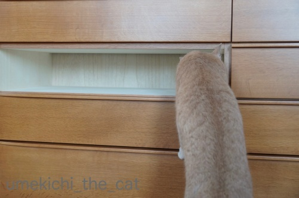
こちらはお手伝いの風景。
衣替え途中で引き出しを抜いたところに吸い込まれようとしましたが
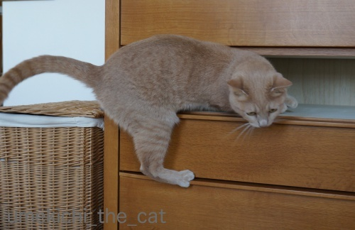


無理でした。
残念でしたね( ´艸｀)
 ↑ガブッと一押し↑
↑ガブッと一押し↑
梅吉の場合は中に入って寝ることはほとんどなく潜んだりして遊ぶ場所。
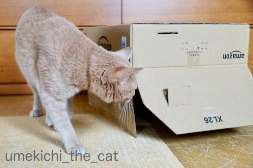
なので置き方はこのようにひっくり返すのか基本です。
と、ひっくり返したとたんやって来ましたよ。
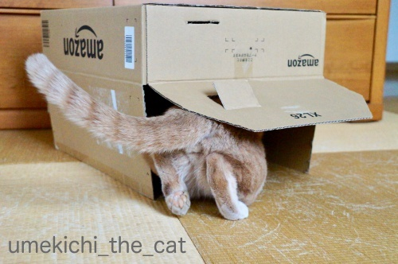
さっそく吸い込まれていきます(*>艸<)
（無修正）
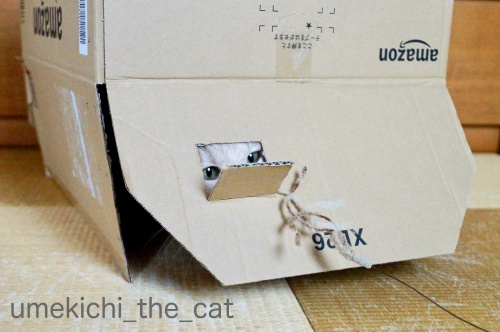
今回は小窓を付けてみました。
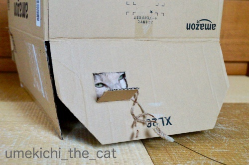
大正解のようでーす！

じゃらしに反応して飛び出してくるのですが

しゅるしゅると吸い込まれていきます。
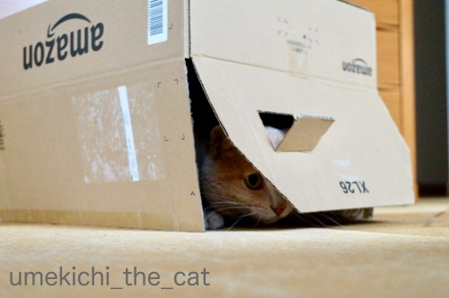
狙って・・・

ズババッ！

そしてまた吸い込まれる。

楽しいですかー0(≧▽≦)0
おかーさんは嬉しいですよ＾＾
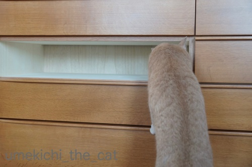
こちらはお手伝いの風景。
衣替え途中で引き出しを抜いたところに吸い込まれようとしましたが
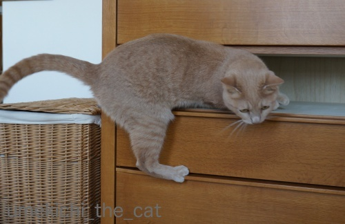


無理でした。
残念でしたね( ´艸｀)
猫なのにメンフクロウ [梅吉]


湯守のお仕事 [梅吉]
残り湯を飲んだり温まったり時にはお湯の中に落ちてみたり
お風呂場ではいろいろ忙しい梅吉さんですが
最近はお仕事もするようになりました。
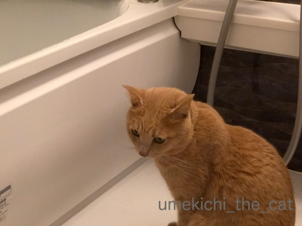
お仕事前の真剣な表情・・・・・
そのお仕事とは！！
（41秒です＾＾）
お湯加減を見ること(*>艸<)
我が家の湯守としてお風呂のお湯管理をしてくれておりますw

仕事場ではありますが夜はぬくぬくとくつろぎの場所に。
![[猫]](https://blog.ss-blog.jp/_images_e/101.gif) ちろっ・・・・・
ちろっ・・・・・

かまわんといてや
迷惑そうな顔なんてしちゃってますが
寂しくなるとなきながらリビングにやって来てお膝を要求してくるんですよ( ´艸｀)
↑ガブッと一押し↑
お風呂場ではいろいろ忙しい梅吉さんですが
最近はお仕事もするようになりました。
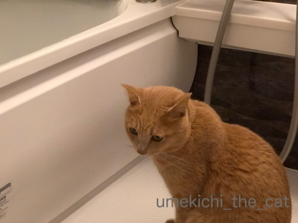
お仕事前の真剣な表情・・・・・
そのお仕事とは！！
（41秒です＾＾）
お湯加減を見ること(*>艸<)
我が家の湯守としてお風呂のお湯管理をしてくれておりますw

仕事場ではありますが夜はぬくぬくとくつろぎの場所に。

迷惑そうな顔なんてしちゃってますが
寂しくなるとなきながらリビングにやって来てお膝を要求してくるんですよ( ´艸｀)
冬の気配を感じる、たこちゃん！？ [梅吉]
昼間ベランダで気持ちよく遊べるのは後２〜３週間でしょうか。


くりんくるんとひだまりを満喫しております＾＾
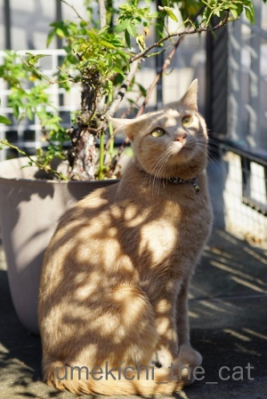
風が冷たく日差しも冬のものに変わってきた様に思います。

冬の足音でも聞こえましたか？
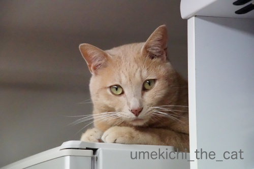
肌寒くなってあったかい冷蔵庫の上が再び定位置に。
最近はたこちゃんがお気に入りですw
（51秒です）
オチも何もない梅吉が遊ぶだけの動画なのでお時間のあるときにでもご覧くださいm(_ _)m
ちなみにたこちゃんはたこ焼きをひっくり返すピックの柄の部分です(*>艸<)
ピックにもいろいろある様で使いやすいという評価を信じて買ってみました。
たこちゃんが欲しかったわけじゃないもん。
悪霊除け [梅吉]


先週、今週、週末の梅吉 [梅吉]
気持ちよ〜く晴れた先週の週末。
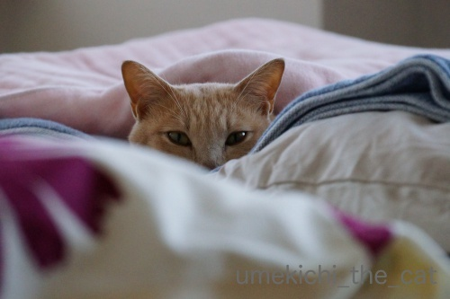
いつもはお布団でぐだぐだしていると叩き出すのですが
（下僕なんですがこのあたりは強気なんですよw)
ちょっと仏心を出して放っておいたならば・・・
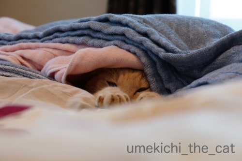
すっかりダメになった様子(^_^;)
うっかりケットをかけてあげたらこんな気持ちよさそうな事にw
これは朝６時ごろ。
ベッドメイクは諦めて好きなだけ寝るがいいわ、と思っていたら本当に起きてきません。
時々生存確認をしたりしてw
結局起きてきたのは夕方の４時くらい。その間飲まず食わず出さず。
お天気の悪い日や暑すぎる日はあまり活動せず寝ていることが多いですが
お天気が良くても寝てるんだな、と思った出来事でした。
「ごはんだよ」って起こさなければもっと寝ていたかも。
（起きた後はわーわー言ってご飯を要求し、もりもり食べて元気一杯走り回って
大変立派なものをお出しになりましたw）
人間も10代、20代前半の頃は12時間くらい寝てたという友人もいましたので
「寝子」の「ねこ」はほっといたらもっと寝るんでしょうねw
変わって今週末の梅吉。
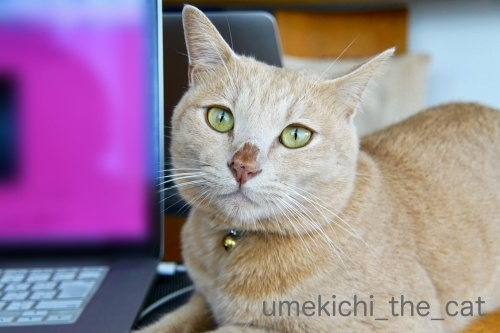
雨上がりだったせいでしょうか。梅雨時期でもないのにお鼻がにじにじw

にじにじ過ぎますってばwww
このお鼻になるとなにをしてもおマヌケな感じになって笑えます ( ´艸｀)

比較のためににじにじしてない梅吉を。
全然違う。。。
トイレ掃除は、よーいドン！ [梅吉]
梅吉さんがいそいそと奥の部屋に消えていきます。

やがて

何事か起きた様子。
奥の部屋にちらりと見えている腕はおっとです。
一体なにが起きているかと言うと・・・・
梅吉はおっとが梅吉のトイレ掃除をすると大喜びの大興奮！
ガサガサ猫砂を掘り返し始めると走ってトイレの部屋に行き掃除の様子を監視。
興奮が極まると掃除しているおっとの背中や腕をガブっとするんです (⌒_⌒;
私が掃除したってしらんぷり、全くの平常心なのに。
そしてトイレ掃除が終わると・・・・・
（24秒です。おっとのばたばた走る音がします）
男子廊下５メートル走 家庭内決勝！
時々梅吉が我に返ってアホらし、と言う顔をしますが楽しそうなふたりですwww
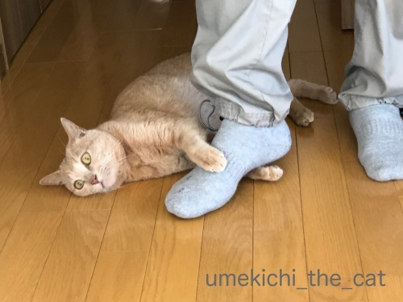
完走のご褒美は足タックル。

疲れた体はお膝でまったり。

うっとり♡
梅吉を膝から降ろそうとすると激しい抵抗にあってまたガブ！
このふたり仲が良いんだかなんなんだか良く分かりませんwwwww


カフェオレ色の梅吉

梅吉 2023年8月10日 永眠


梅吉と出会った譲渡会

犬猫の理由なき殺処分ゼロ
妄想広告
UMEKICHI 光

爆発的に早い！
時々攻撃的！
Thanks to Mr.Boss365
爆発的に早い！
時々攻撃的！
Thanks to Mr.Boss365